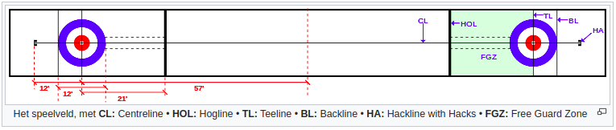

Gameplay
Doel
Het doel van het spel is om punten te scoren door de stenen dichter bij het centrum van het 'huis' te krijgen dan de andere teams. Spelers van beide teams wisselen elkaar af om een steen te werpen. Elk spel bestaat uit een aantal 'ends'. Een end is gedaan als alle acht stenen van een teams zijn geworpen. In totaal zijn er dan 16 stenen op het veld. Curling heeft geen gelijkspel, het spel blijft doorgaan totdat er een uiteindelijke winnaar is. De winnaar van het spel is het team met de meeste punten nadat alle ends gespeeld zijn.
Internationale competitiewedstrijden tellen globaal genomen tien ends. Elk team heeft 73 minuten om al hun worpen te voltooien. Elke tien ends mag een team twee minuten pauze nemen. Indien er meerdere ends worden gespeeld in één wedstrijd, krijgen de teams per extra end tien minuten om hun worpen te voltooien met een 60 seconden pauzetijd tussen de extra ends. Naast dit systeem is er ook nog het 'thinking time' systeem waarbij de teams minder tijd krijgen per end om hun worpen te voltooien. Op deze manier moeten de teams strategischer en tactischer gaan spelen om hun beperkte tijd goed in te delen.
Levering van de steen
Het proces van het schuiven van de steen naar de 'hogline' waar men de steen los laat noemt men de levering van de steen. De 'skip' is de aanvoerder van het team. Het is de taak van de skip om instructies te geven aan zijn teamgenoten over het gewicht, de draai, de lijn en andere tactieken door te roepen of door met zijn curling bezem op het ijs te tikken. Voor het afleveren van de steen wordt het traject schoongeveegd met de curling bezem om te voorkomen dat de steen uit zijn koers geraakt door opstakels. Zo'n opstakel voor de steen wordt een 'pick-up' of een 'pick' genoemd.
De werper werpt de steen vanaf de 'hack'. Een andere speler, meestal de skip, geeft de instructies. De twee andere spelers vegen het traject vóór de steen om het traject te beïnvloeden. De spelers van een team wisselen elkaar af in het werpen en het vegen.
De 'gripper' van de werper wordt tegen één van de hacks geplaatst. Een rechtshandige curler plaatst zijn rechtervoet tegen de linker hack en vice versa voor een linkshandige.
De steen wordt nu voor de voet geplaatst in de hack. De werper stijgt lichtjes op in de hack, trekt de steen terug en komt dan uit de hack waardoor de steen naar voren wordt geduwd doordat de 'slider' voor de gripper wordt bewogen. De stuwkracht van deze beweging bepaald het gewicht en dus de afstand die de steen zal afleggen.
De steen wordt losgelaten wanneer de werper de hogline nadert. Op dat moment geeft de werper een lichte draai aan de steen in de richting van de klok of tegen de klok in. Een steen draait gemiddeld 2.5 keer rond voordat hij tot rust komt.
Indien de steen niet werd losgelaten voor de hogline, telt de steen niet mee. De steen van een valse worp wordt onmiddelijk uit het spel gehaald, men wacht niet tot de steen in rust is.
Vegen
Na het leveren van de steen kan het traject nog bijgewerkt worden door de vegers. Het vegen heeft daarnaast nog andere functies zoals de wrijving onder de steen verminderen, de draai van de steen beperken en pick-ups voor de steen verwijderen. Bij het vegen zijn de druk en de snelheid van curciaal belang om de steen op de juiste plek te krijgen.
Het is een uitdaging om te weten wanneer je moet vegen. Als het ijs voor de steen geveegd wordt, gaat de steen verder en rechter bewegen. Soms is het echter de bedoeling dat de steen enkel rechter of enkel verder beweegt. Het is in dergelijke situaties dat het team moet beslissen of het beter is om ver genoeg maar te recht te spelen of niet ver genoeg te komen maar wel met de juiste draai.
Bij curling wordt er veel geroepen. De vegers roepen de informatie over het gewicht van de steen. De skip roept wanneer de vegers moeten vegen afhankelijk van het traject van de steen.
Vegen op het ijs is overal toegestaan tot aan de 'teeline'. Van zodra de steen de teeline overschijdt mag er nog maar één veger van het team en één veger van de tegenstanders vegen. De tegenstanders krijgen dus nog de kans om de steen uit zijn baan te krijgen.
Een steen uitbranden
Het is niet ongewoon dat spelers per ongeluk een andere steen raken met hun bezem of een lichaamsdeel. Dit wordt ook wel "burning a stone" genoemd. Het aanraken van een stilstaande steen is geen overtreding indien er geen andere stenen in beweging zijn.
Wanneer er een stilstaande steen wordt aangeraakt terwijl er wél een andere steen in beweging is, dan kan het zijn dat de steen blijft liggen, terug naar de vorige locatie verplaatst wordt of wordt weg genomen.
Type worpen
Er zijn drie fundamentele soorten worpen:
Guards : Dit zijn stenen die geworpen worden in de zone voor het huis, de "free guard" zone, om de steen het dichste bij het midden van het huis te beschermen.
Draws : Deze worpen hebben als enige doel om het huis te bereiken.
Takeouts : Deze worpen zijn bedoeld om andere stenen uit de weg te ruimen.
